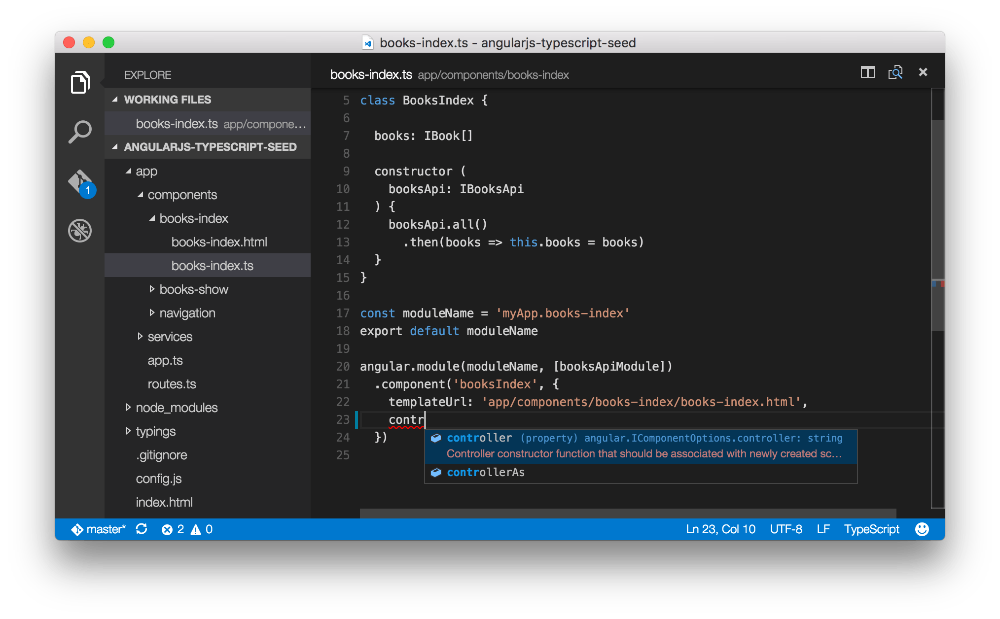

Wie man TypeScript mit AngularJS nutzt
angularjs typescript | Sascha Brink • | 10 Minuten
Ich möchte euch in diesem Artikel zeigen, wie man schon heute mit AngularJS 1.X Anwendungen mit TypeScript entwickeln kann. TypeScript ist eine Sprache die von Microsoft entwickelt wurde und auf ES2015 (früher auch mal ES6 oder Harmony genannt) aufsetzt und um Typen erweitert.
Typen in JavaScript?
Dabei wird TypeScript nach JavaScript transformiert. Was im Browser ausgeführt wird ist also ganz normales JavaScript(ohne Typen). Das schöne ist, dass in TypeScript die Typen optional sind. So können wir zunächst normales JavaScript schreiben und nur die Typen ergänzen.
Um TypeScript zu JavaScript zu kompilieren muss zunächst TypeScript installiert werden
$ npm install -g typescript
und eine Konfiguration für das Projekt angelegt werden. Die Konfiguration ist in die Datei tsconfig.json zu schreiben.
{
"compilerOptions": {
"sourceMap": true
},
"exclude": [
"node_modules"
]
}
Schauen wir uns das in einem Beispiel an:
var coolFramework = 'AngularJS'
var thingsILearned = [coolFramework, 'TypeScript', 'How to survive']
Das sieht aus wie normales JavaScript, ist aber eben auch valides TypeScript. Nun fügen wir einmal Typen an. (Zum Ausprobieren)
var coolFramework: string = 'AngularJS'
var thingsILearned: string[] = [coolFramework, 'TypeScript', 'How to survive']
Damit legen wir fest, dass coolFramework immer vom Typ string sein muss. Doch Achtung, coolFramework darf auch die Werte undefined und null einnehmen. In thingsILearned definieren wir ein Array aus Strings. Alternativ hätten wir auch Array<string> schreiben können.
TypeScript erlaubt uns außerdem Klassen und Interfaces zu definieren.
interface IHuman {
name: string
size: number
saySomething(sentence: string): void
}
class Human implements IHuman {
constructor(
public name: string,
public size: number
) {}
saySomething(sentence: string) {
console.log(sentence)
}
}
Wenn wir aber normale JavaScript-Frameworks einbinden wollen, sind natürlich hierfür keine Typen für dieses Framework gesetzt. Dafür gibt es so genannte TypeDefinitions mit der Dateiendung .d.ts.. Damit wir nicht jedes mal die Definitionen von Hand neu schreiben müssen, gibt es dafür eine große Registry, DefinitelyTyped, in der wir auch die TypeDefinition von AngularJS und vielen anderen Frameworks finden.
AngularJS mit TypeScript
Wir starten mit unserem AngularJS-TypeScript-Seed auf GitHub. Hier sind alle nötigen Schritte, wie das konfigurieren des Compilers und das laden der TypeDefinitions bereits erledigt und wir können uns auf das wesentliche konzentrieren.
Schauen wir uns die index.html an, sehen wir eine kleine Besonderheit. In diesem Seed setzten wir SystemJS als Module Loader ein um unsere Datein direkt laden zu können und im Browser vom TypeScript zu JavaScript zu übersetzten. So können wir hier auf einen Build-Prozess verzichten. Wir importieren als Startpunkt also die Datei, die in app/app.ts liegt. Die Dateiendung deutet auf TypeScript hin und wird von SystemJS automatisch angefügt. Schauen wir uns also die Datei mal genauer an.
import * as angular from 'angular'
import 'angular-route'
import routes from './routes'
import navigation from './components/navigation/navigation'
import booksIndex from './components/books-index/books-index'
import booksShow from './components/books-show/books-show'
angular.module('myApp', [
'ngRoute',
routes,
navigation,
booksIndex,
booksShow
])
Diese Datei könnte genau so gut ein ES2015-Modul sein. Hier versteckt sich kein spezifischer TypeScript-Code
Eine Component in TypeScript
Schauen wir uns also mal die entscheiden Dateien in diesem Projekt genauer an. In der Datei app/components/books-index/books-index.ts finden wir zunächst eine class mit den Namen BooksIndex. Das ist unser Controller für die gleichnamige Komponente die wir mit component(…) definiert haben.
import * as angular from 'angular'
import booksApiModule, {IBook, IBooksApi} from '../../services/books-api/books-api'
class BooksIndex {
books: IBook[]
constructor (booksApi: IBooksApi) {
booksApi.all()
.then(books => this.books = books)
}
}
const moduleName = 'myApp.books-index'
export default moduleName
angular.module(moduleName, [booksApiModule])
.component('booksIndex', {
templateUrl: 'app/components/books-index/books-index.html',
controller: BooksIndex,
controllerAs: 'booksIndex'
})
In dem Controller steckt nun einiges an TypeScript. Schauen wir uns das mal Zeile für Zeile an.
class BooksIndex {
books: IBook[]
Wir definieren eine Klasse mit dem Namen BooksIndex, in der es ein Attribut mit dem Namen books gibt. Standardmäßig ist dieser Parameter public, also darf man darauf auch bei einer Instanz zugreifen. books ist vom Typ IBook[] - das IBook importieren wir uns aus dem book-api (unserem Service mit unserem Backend zu kommunizieren). Die []-Klammern zeigen an, dass es sich hier um ein Array handelt.
constructor (booksApi: IBooksApi) {
Als nächstes folgt der constructor(), der automatisch aufgerufen wird wenn die Klasse instanziert wird. In den Parametern finden wir unseren Service wieder. Wir nutzen hier natürlich auch hier die Dependency Injection von AngularJS. Da TypeScript den Typen aber nicht ableiten kann und booksApi standardmäßig vom Typ any wäre geben wir hier die Klasse als den Typ IBooksApi an. Generell werden Typen immer mit einem Nachgestellten Doppelpunkt angegeben. Im constructor() laden wir alle Bücher und speichern sie im eben definierten Attribute books.
booksApi.all()
.then(books => this.books = books)
Innerhalb des .then() nutzen wir eine weitere ES2015-Technik: Die Arrow-Function. Sie verkürzt zum einen die Schreibweise, zum anderen bindet sie das this des Eltern-Scope in die neue Funktion. Ihr seid bestimmt mit der controllerAs Syntax schon einige male auf dieses Verhalten gestoßen. Eine alternative ohne Fat-Arrow könnte so aussehen:
booksApi.all()
.then(function(books) { return this.books = books }.bind(this))
Wir exportieren unsere Modulnamen als mit export default um die Abhängigkeiten einfacher Verwalten zu können. Außerdem registrieren wir eine neue component mit Hilfe von .component(). Da wir die Type Definitions nutzen, ist die Methode component() bekannt und wir bekommen je nach Editor oder IDE sogar eine Code Completion.

Services
Beim Umgang mit Services spielt TypeScript seine großen Stärken aus. In Services implementieren wir unsere Geschäftslogik, wir laden Daten und verändern diese. Schauen wir uns unseren booksApi-Service in app/services/books-api/books-api.ts mal genauer an.
import * as angular from 'angular'
export interface IBook {
title: string
subtitle: string
publisher: {
name: string
url: string
}
// ...
}
Wir definieren hier das eben im Controller schon genutzte IBook, das Interface der Daten die uns der Server schickt.
export interface IBooksApi {
all(): angular.IPromise<IBook[]>
getByIsbn(isbn: string): angular.IPromise<IBook>
}
Außerdem schaffen wir uns ein Interface für die Klasse die wir implementieren werden. So können wir die Implementierung auswechseln können aber sicher sein, dass die API sich nicht verändern wird. Interessant sind hier die Rückgabewerte der Funktionen. Bei der Methode all() erwarten wir, dass ein Promise zurückgegeben wird der im Erfolgsfall ein Array aus Büchern zurückgibt. Das Interface angular.IPromise<T> nennt man Generic.
Erst dann folgt unser eigentlicher Service, den wir ebenfalls als Klasse definieren.
class HttpBooksApi implements IBooksApi {
private baseUrl: string = 'http://bookmonkey-api.angular.de/books'
constructor(
private $http: angular.IHttpService
) {}
Das Attribute baseUrl definieren wir als private. Dies schützt uns davor, dass die baseUrl von außen geändert werden kann. Dann folgt unser constructor(), der wieder Services mittels DI injectet. Das Schlüsselwort private sorgt dafür, dass wir innerhalb der Klasse mit this.$http auf den Service zugreifen können. Gleiches würde auch mit public funktionieren, dann wäre der Wert auch von Außen zugänglich. Auch hier benötigen wir wieder einen Typ. Die Type Definition für Angular folgt dem Schema angular.I<Name des Service ohne $>Service.
public all() {
return this.$http.get<IBook[]>(this.baseUrl)
.then(booksResponse => booksResponse.data)
}
Anschließend implementieren wir unsere Methoden die vom Interface gefordert werden. Methoden sind(wie Attribute auch) standardmäßig public, eine explizite Notation ist aber zu empfehlen, so wird auch für TypeScript-Neulinge deutlich.
Wir senden unseren $http-Request an unsere API ab. Der Request liefert ein Array aus Büchern zurück, das können wir direkt im Request mit beschreiben. Zuletzt möchten wir noch die Daten übergeben. Die Arrow Function hat ein implizites return wenn nach dem Pfeil kein neuer Block folgt. Dadurch ist die Schreibweise sehr kurz.
angular.module(moduleName, [])
.service('booksApi', HttpBooksApi)
Natürlich müssen wir unseren Service noch bei Angular anmelden. Dafür nutzen wir den service-Service der auf die factory aufsetzt und unsere Klasse instanziiert.
Kann ich TypeScript schon heute nutzen?
Die Frage, ob man TypeScript mit Angular im 1er-Zweig nutzen kann, ist ganz klar mit JA! zu beantworten. Der Core von Angular wird in TypeScript geschrieben sein, so dass viele Projekte in Zukunft sicherlich auch TypeScript nutzen werden. TypeScript hilft euch, viele Fehler zu vermeiden und unterstützt dabei noch durch eine Code Completion. Die Unaufdringlichkeit von TypeScript (Typen sind nicht verpflichtend) hilft besonders Einsteigern, welche bereits Programmiersprachen wie Java oder C# kennen.


Sascha Brink
Sascha betreut regelmäßig Angular-Projekte und unterstützt Firmen bei der Ausbildung ihrer Mitarbeiter. Im Jahr 2013 hat er die Platform AngularJS.DE gestartet um das Framework in Deutschland bekannter zu machen. Sascha gibt Angular- und JavaScript-Schulungen auf deutsch und englisch.